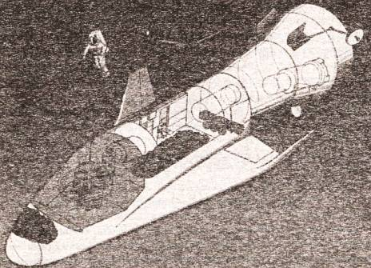
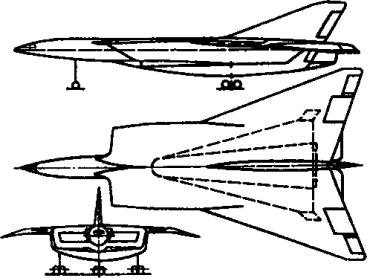
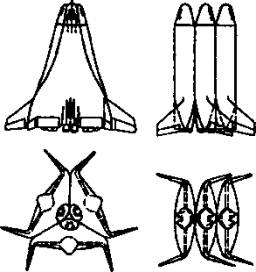

Воспоминания о «Звездных войнах»
Увлекшись описаниями всевозможных космических кораблей, мы с вами несколько упустили из виду главную цель, для которой они прежде всего предназначались, — завоевание господства в околоземном космическом пространстве. Именно такую цель ставили перед собой создатели «Стратегической оборонной инициативы», или, сокращенно, программы СОИ.
РОЖДЕНИЕ МИФА. Обнародовал эту программу президент США Рональд Рейган. Выступая 23 марта 1983 года перед своими соотечественниками, он, в частности, сказал:
«Сегодня в соответствии с нашими обязательствами по договору о ПРО и признавая необходимость более тесных консультаций с нашими союзниками, я предпринимаю первый важный шаг. Я отдаю распоряжение начать всеобъемлющие и энергичные усилия по определению содержания долгосрочной программы научных исследований и разработок, которая положит начало достижению нашей конечной цели устранения угрозы со стороны стратегических ракет с ядерными зарядами. Это может открыть путь к мерам по ограничению вооружений, которые приведут к полному уничтожению самого этого оружия. Мы не стремимся ни к военному превосходству, ни к политическим преимуществам. Наша единственная цель — и ее разделяет весь народ — поиск путей сокращения опасности ядерной войны».
Витиеватая риторика политика настолько затуманила мозги многим слушателям, что далеко не все тогда поняли, что президент таким образом одним махом перечеркнул Договор по противоракетному оружию (ПРО).
Что же произошло? Что так резко изменило отношение Вашингтона к противоракетной обороне? Говорят, что инициатором программы «Стратегическая оборонная инициатива» («Strategic Defense Initiative») был «отец» американской термоядерной бомбы Э. Теллер, который был знаком с Рейганом еще с середины 60-х годов XX века и всегда являлся противником Договора по ПРО и любых соглашений, ограничивающих возможность США наращивать свой военно-стратегический потенциал.
Кроме того, на встрече с Рейганом Теллер говорил не только от своего имени. Он опирался на мощную поддержку военно-промышленного комплекса США. При этом Теллер и его союзники предполагали, что запуск СОИ даст не только возможность хорошо заработать воротилам американского военно-промышленного комплекса, но и создаст для экономики СССР новую колоссальную перегрузку, грозящую ей крахом.
Известный ученый оказался провидцем лишь наполовину. Да, программа дала основание для новых военных заказов промышленности США. Но вызвала неоднозначную реакцию как в самой стране, так и за ее рубежами.
Так, сенатор Эдвард Кеннеди назвал речь «безрассудными планами звездных войн». И с тех пор иначе план СОИ уж никто не называл. Кроме того, у многих экспертов вызвала сомнение техническая возможность осуществления данной программы в полном объеме.
Под давлением общественного мнения в июне 1983 года Рейган учредил три экспертные комиссии, которые должны были дать оценку технической осуществимости высказанной им идеи.
Из подготовленных материалов наиболее известен доклад комиссии Флетчера, которая пришла к выводу, что, несмотря на крупные нерешенные технические проблемы, СОИ выглядит многообещающе. Комиссия предложила схему эшелонированной оборонительной системы, основанной на новейших военных технологиях. Каждый эшелон этой системы предназначен для перехвата боеголовок ракет на различных этапах их полета.
Комиссия рекомендовала начать программу исследований с таким расчетом, чтобы завершить их в начале 90-х годов демонстрацией основных технологий ПРО. Затем, основываясь на полученных результатах, принять решение о продолжении или закрытии работ по созданию широкомасштабной системы защиты от баллистических ракет.
На основании этого доклада и была подготовлена президентская директива № 119, появившаяся в конце 1983 года. Осуществление программы началось.
ПРОРЕХИ СОИ. При этом довольно быстро выяснилось: ассигнования на Стратегическую оборонную инициативу, предусмотренные бюджетом, недостаточны. Некоторые сенаторы оценивали общую сумму расходов в 3 трлн. долларов!

Проект французского воздушно-космического корабля «Гермес».

Транспортный космический корабль по французскому проекту «SHECMA».
Даже американская экономика не могла безболезненно выделить такую сумму, поэтому внедрение СОИ планировалось поэтапно. В качестве элементов системы первой очереди рассматривались такие, как космическая система обнаружения и сопровождения баллистических ракет на активном участке траектории их полета; система обнаружения и сопровождения головных частей, боеголовок и ложных целей; перехватчики космического базирования; противоракеты заатмосферного перехвата баллистических целей; система боевого управления и связи и т. д.
Далее предполагалось вывести на орбиту платформы с пучковым оружием космического базирования; противоракеты для перехвата целей в верхних слоях атмосферы; бортовую оптическую систему, обеспечивающую обнаружение и сопровождение целей на среднем и конечном участках траекторий их полета; лазерную установку космического базирования, предназначенную для выведения из строя баллистических ракет и противоспутниковых систем; наземную пушку с разгоном снаряда до гиперзвуковых скоростей и много чего другого.
В общем, те, кто планировал структуру СОИ, полагали, что им удастся обеспечить перехват максимального количества ракет и их боеголовок в ходе трех этапов полета: на активном участке траектории, средней части полета в космосе после того, как боеголовки и ложные цели отделились от ракет, и на заключительном этапе, когда боеголовки устремляются к своим целям. Наиболее эффективным считалось поражение целей на начальном этапе полета, когда боеголовки еще не отделились от ракеты.

Схема британского трехэлементного космического корабля «Mustard».
Однако независимые эксперты разных стран, в том числе и нашей, просчитав вероятность поражения как самих ракет, так и целей, атакуемых этими ракетами, пришли к выводу, что затея со «звездными войнами» во многом бессмысленна. Прежде всего потому, что ее нельзя оценивать категориями Второй мировой войны.
Когда во время налета бомбардировщиков, скажем, на Лондон или Москву половина их сбивалась зенитной артиллерией и истребителями, это означало что урон, наносимый городу, уменьшался по крайней мере вдвое. А вот для термоядерного оружия такой расчет уже не годится. Потому как достаточно одной-единственной боеголовки, чтобы город попросту перестал существовать.
Так что даже при сбитии 99 % всех боеголовок, направленных, скажем, на Нью-Йорк, мегаполис все равно исчезнет с лица Земли. Так какой же тогда смысл и огород городить?
Очевидно, постепенно эта простая мысль дошла и до сознания конгрессменов США. Конгресс стал систематически урезать бюджет программы СОИ (до 40–50 % ежегодно), пока 13 мая 1993 года министр обороны США Эспин официально не объявил о прекращении работ над проектом СОИ.
Правда, это случилось уже не при Рейгане, а при следующем президенте США — Билле Клинтоне.